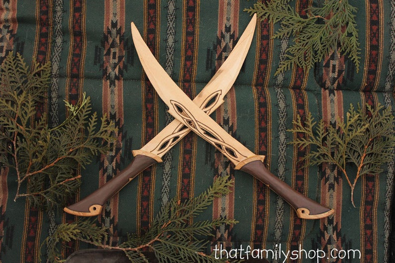

Witaj w Kuźni
Witaj w Kuźni Krasnoludów, która jest uważana że miejsce w którym powstają mistrzowskie orężę, wykute z rąk najlepszych kowali na całym świecie. Tylko przyjrzyj się tej ostrości, jakości oraz sposobu wykonania wszystkich oręży.
Miecz Aragorna
Przekuty przez elfów na nowo ze szczątków Narsila. Napisy na obu stronach klingi w Tolkienowskim języku Quenya, zapisane runami Eregionu: "Nányë Andúril i né Narsil i macil Elendilo. Lercuvanten i máli Mordórëo". Co tłumaczy się na angielskie: "I am Andúril who was Narsil, the sword of Elendil. Let the thralls of Mordor flee me.".
Topór Gimilliego
Odlany z kutej stali narzędziowej i posiada wygrawerowane mosiężne ozdoby. Wyblakłe stalowe wykończenie daje wrażenie, iż broń była wcześniej używana w walce. Nacisk na jakość jest bardzo ważna w każdym starannie dobranym egzemplarzu
Kusza Pradawnych
Została wyrobiona przez najlepszych cieśli Kransoludzkich, którzy poświecili na jej stworzenie około 10 ciągłych dni pracy na tym arcydziełem. Początkowo miała slużyć do statycznego strzelania jednak została tak przerobiona że umożliwiała krasnoludom przemieszczanie się z nią.
Tarcza Lodrina
Była to Tarcza starożytnego wojownika Lodrina który przyćmiewał wszystkich rycerzy, gdyż nikt nie potrafił złamać jego bloku tarczą, mówi się że tarcza wytrzymywała uderzenia maczug trolli. została wykuta przez człowieka pracującego w kuźni krasnoludów.

Sztylety Voi & Nea
Historia najbardziej zabójczych sztyletów w całej historii sięga czasów starożytnych, zostały one wykute przez 3 trzech kowali z trzech ras: Elfów, Krasnoludów oraz Ludzi. Zostały tak dopracowane że jedno pchnięcie potrafiło przebić nawet najtwardszą kolczugę